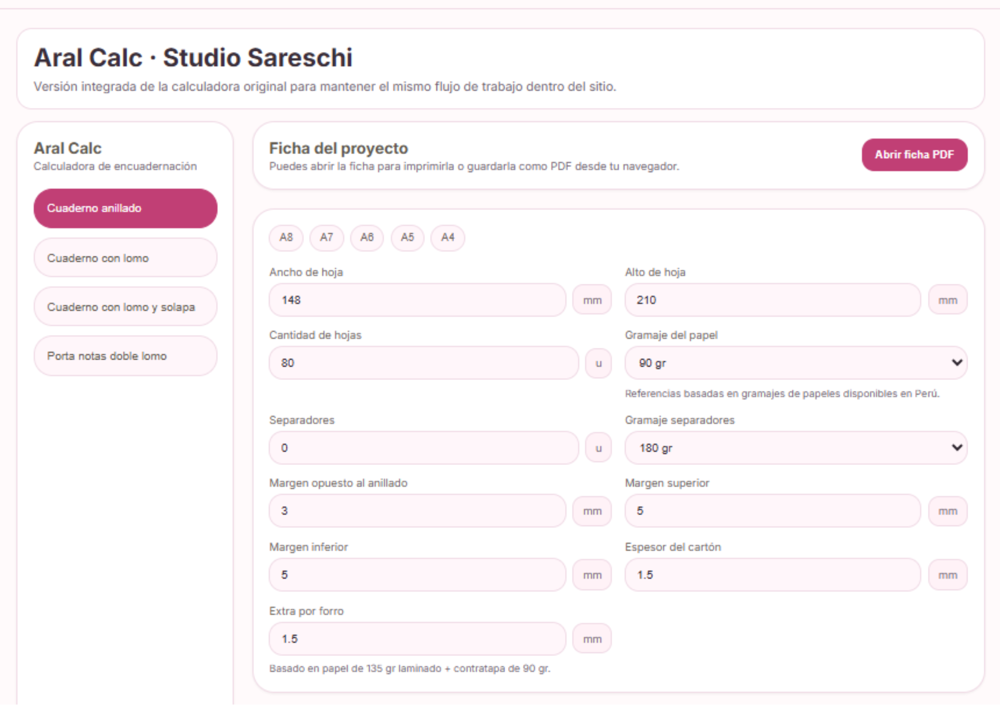
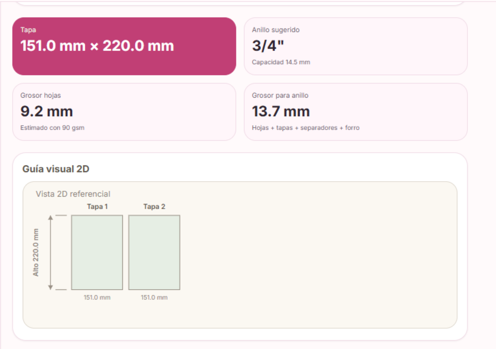
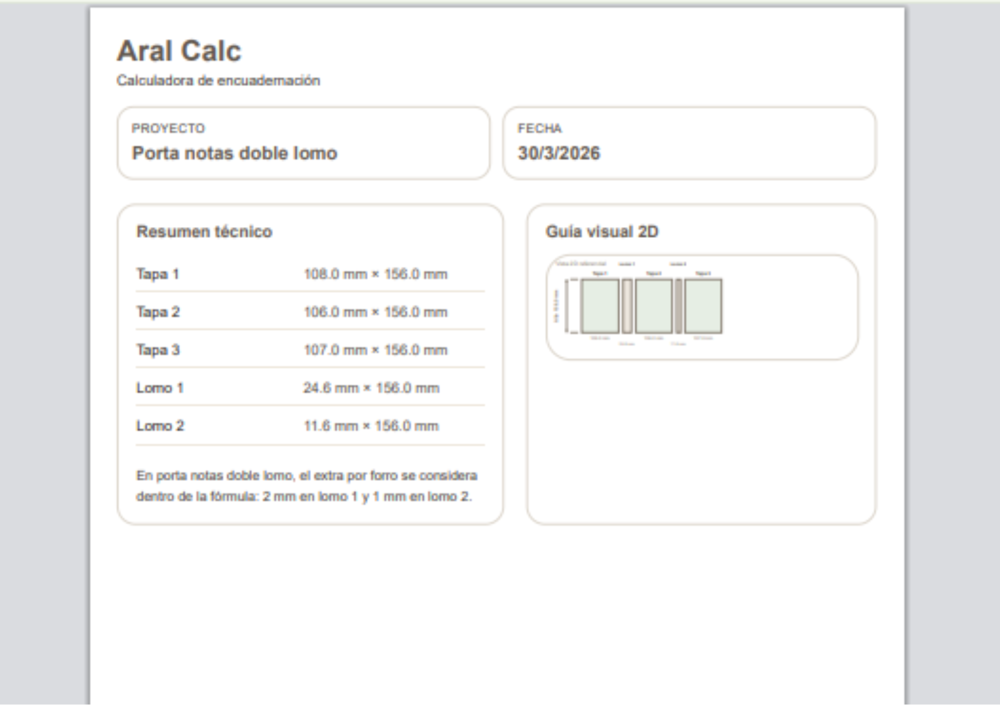

Guía comercial
Aral Calc
Más claridad para calcular. Más seguridad para avanzar.
Una herramienta creada para ayudarte a trabajar con orden, reducir errores y tomar decisiones con más confianza.
¿Qué es Aral Calc?
Aral Calc nace de una necesidad real: hacer más simple un proceso que muchas veces puede sentirse confuso, pesado y lleno de prueba y error.
Es una herramienta pensada para acompañarte en tus cálculos de forma más clara, práctica y ordenada, para que puedas avanzar con más confianza y dedicar tu energía a crear, no a dudar.
¿Para qué sirve?
Aral Calc te ayuda a tomar decisiones con más seguridad cuando necesitas calcular, organizar medidas y avanzar en tu proceso de trabajo.
Porque cuando una herramienta te da claridad, no solo ahorras tiempo: también trabajas con más tranquilidad.
- reducir errores
- ahorrar tiempo
- ordenar mejor tu proceso
- sentirte más segura al calcular
- avanzar con más confianza desde la planificación
¿Cómo funciona?
- Eliges el tipo de trabajo
- Ingresas tus datos
- Obtienes una referencia clara
- Tomas decisiones con más seguridad
Lo que hace diferente a Aral Calc
No siempre necesitas tener el material físicamente contigo para empezar a avanzar.
Aral Calc también te ayuda a planificar, comparar y tomar decisiones con anticipación. Eso significa menos improvisación, menos dudas y una forma más tranquila de trabajar.
Porque a veces lo que más se necesita no es hacer más, sino tener una herramienta que te dé claridad.
Pensada para acompañarte de verdad
Aral Calc está pensada para personas que quieren trabajar mejor, con más orden y con menos margen de error.
- practicidad
- claridad
- ahorro de tiempo
- una herramienta que acompañe, no complique
- una forma más segura de avanzar
Conoce Aral Calc



Trabajar con claridad cambia por completo la experiencia.
Aral Calc fue creada para ayudarte a sentir más seguridad en cada paso, reducir errores y avanzar con más confianza.
No se trata solo de calcular.
Se trata de trabajar con más calma, más orden y más claridad.